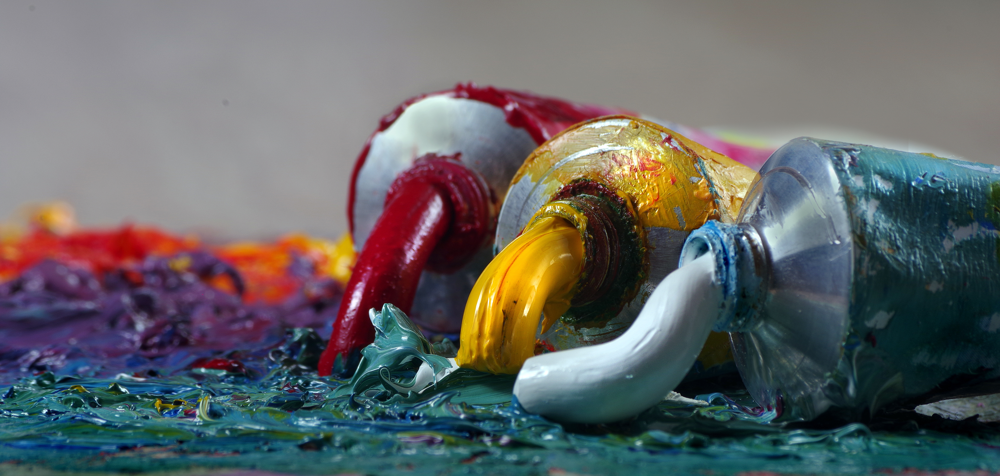

.jpeg)


Pintar é uma das artes visuais mais antigas e populares, pois permite que a visão de mundo do pintor seja expressa sem barreiras. Mas transformar o seu modo de ver a realidade em arte não é uma tarefa tão simples, já que exige dedicação e muito treinamento. Os primeiros hominídeos já registravam seu dia a dia nas paredes das cavernas que serviam através de modos rústicos de pintura. O que começou tendo uma função prática passou a ser encarado como arte. Até perto de 1400 d.C, a pintura era praticada em mídias sólidas, como pedras e pedaços de madeira. Foi no período da Renascença que os artistas italianos passaram a popularizar a pintura, especialmente em telas de cânhamo com tinta a óleo. Já no início do século XX, com o surgimento da tinta acrílica – mais barata e, portanto, mais acessível –, a pintura em telas de linho se democratizou. Munido de pincel, tinta e uma boa superfície, a pintura em tela pode ser uma atividade prazerosa realizada por qualquer um que esteja disposto a se dedicar a ela!

A arte clássica, por conta de seu contexto histórico, é impulsionada por grande explosão de vida e confiança no ser humano. Por isso, essas manifestações artísticas são marcadas pela visão antropocêntrica, que evidenciará a beleza do corpo humano na pintura e na escultura.

O niilismo é alicerçado no ceticismo, isento de regras e contra aos ideais das escolas positivistas e materialistas. A principal linha de raciocínio da corrente é a visão radical e cética com relação às perspectivas da realidade, exterminando convicções, princípios e valores.

A arte moderna revolucionou seu tempo.
A arte moderna perdurou por quase um século, chegando até a metade do século XX,
aproximadamente, com um destaque efervescente em território nacional, quando teve a Semana de
Arte Moderna de 1922. Vamos ver como a arte moderna influenciou a sociedade, e vice-versa!
Confira inspirações para que você leve o seu dia a dia de uma maneira menos comum e mais
criativa e inovadora. Descubra o que é arte moderna, principais artistas e obras!!
Mussum Ipsum, cacilds vidis litro abertis. Nullam volutpat risus nec leo commodo, ut interdum diam laoreet. Sed non consequat odio. Posuere libero varius. Nullam a nisl ut ante blandit hendrerit. Aenean sit amet nisi. Viva Forevis aptent taciti sociosqu ad litora torquent. Interagi no mé, cursus quis, vehicula ac nisi. Per aumento de cachacis, eu reclamis. Quem num gosta di mim que vai caçá sua turmis! Suco de cevadiss deixa as pessoas mais interessantis. Paisis, filhis, espiritis santis. Bota 1 metro de cachacis aí pra viagem! Admodum accumsan disputationi eu sit. Vide electram sadipscing et per. Aenean aliquam molestie leo, vitae iaculis nisl. Interessantiss quisso pudia ce receita de bolis, mais bolis eu num gostis. Atirei o pau no gatis, per gatis num morreus. Viva Forevis aptent taciti sociosqu ad litora torquent. Em pé sem cair, deitado sem dormir, sentado sem cochilar e fazendo pose. Vehicula non. Ut sed ex eros. Vivamus sit amet nibh non tellus tristique interdum.